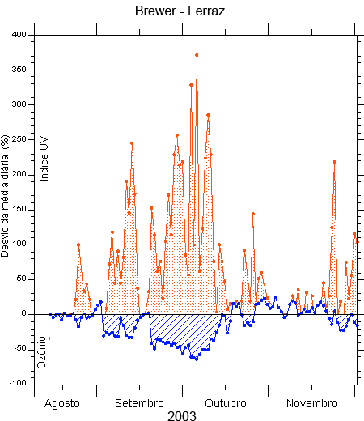

Pagina 2

Figura 4 – Percentual da variação diária do índice da radiação UV e do ozônio, em
Comte. Ferraz, durante a passagem do o “ buraco de ozônio”, em 2003.
Veja os resultados obtidos pelo governo brasileiro em 2007:
- 82,8% de eliminação de CFCs;
- 88% de eliminação de halons, usados em extintores de incêndio;
- 77,3% de eliminação de tetracloreto de carbono, usado na industria química como
agente de processo;
- 76,3% de eliminação de brometo de metila, usado principalmente na agricultura;
- 100% da fabricação de ar condicionado automotivo não utiliza os CFC's, desde
1999;
- 100% da refrigeração doméstica é isenta de CFC's atualmente;
- O consumo de CFCs caiu de 10.525 toneladas (média dos anos 1995 -1997) para
478 toneladas em 2006.